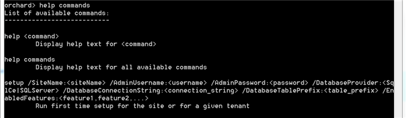

Orchard provides a command-line interface for performing many of the functions that are available from the admin panel (and some that aren't). The command-line tool is named "orchard.exe" and is located in the bin directory underneath to root of your site. To run the command-line tool, first open a command prompt on the root of the site (i.e. Orchard.Web). This can be done for example by SHIFT+right-clicking on the folder in Windows Explorer and choosing "Open command window here". From there, type "bin\orchard.exe". Note that you need to run this tool from the root of your site.
Using Commands

To view a list of available commands, type "help commands" at the prompt.

If you run Orchard.exe before you have set up your site, the only command you can run is the setup command. This performs exactly the same function as running Orchard in the browser and completing the setup form (to enter a site name, admin user name, password, and database options). Additionally, the setup command takes an optional argument, which is a list of features to enable at setup-time.

After running the setup command, you can type "help commands" again to reveal more commands.
orchard> help commands
List of available commands:
---------------------------
blog create /Slug:<slug> /Title:<title> /Owner:<username> [/MenuText:<menu text>]
Creates a new Blog
blog import /Slug:<slug> /FeedUrl:<feed url> /Owner:<username>
Import all items from <feed url> into the blog at the specified <slug>
cultures get site culture
Get culture for the site
cultures list
List site cultures
cultures set site culture <culture-name>
Set culture for the site
feature disable <feature-name-1> ... <feature-name-n>
Disable one or more features
feature enable <feature-name-1> ... <feature-name-n>
Enable one or more features
feature list [/Summary:true|false]
Display list of available features
help <command>
Display help text for <command>
help commands
Display help text for all available commands
package create <extensionName> <path>
Create a package for the extension <extensionName>
(an extension being a module or a theme).
The package will be output at the <path> specified.
The default filename is Orchard.[Module|Theme].<extensionName>.<extensionVersion>.nupkg.
For example, "package create SampleModule c:\temp" will create the package
"c:\temp\Orchard.Module.SampleModule.1.0.0.nupkg".
package install <packageId> <location> /Version:<version>
Install a module or a theme from a package file.
package uninstall <packageId>
Uninstall a module or a theme.
The <packageId> should take the format Orchard.[Module|Theme].<extensionName>.
For example, "package uninstall Orchard.Module.SampleModule" will uninstall the Module under the "~/Modules/SampleModule" directory and
"package uninstall Orchard.Theme.SampleTheme" will uninstall the Theme under the "~/Themes/SampleTheme" directory.
user create /UserName:<username> /Password:<password> /Email:<email>
Creates a new User
The available commands depends on the features that are currently enabled for your site. To list the features that you can enable or disable, type "feature list" or "feature list /Summary:true". You can enable additional features (and thus, additional commands), by typing "feature enable <feature-name> at the command-prompt.
orchard> feature list /Summary:true
Common, Enabled
Containers, Enabled
Contents, Enabled
Dashboard, Enabled
DatabaseUpdate, Disabled
Feeds, Enabled
Gallery, Enabled
HomePage, Enabled
Lucene, Disabled
Navigation, Enabled
Orchard.ArchiveLater, Disabled
Orchard.Blogs, Enabled
Orchard.Blogs.RemotePublishing, Disabled
Orchard.CodeGeneration, Enabled
Orchard.Comments, Enabled
Orchard.ContentTypes, Enabled
Orchard.Email, Disabled
Orchard.Experimental, Disabled
Orchard.Experimental.TestingLists, Disabled
Orchard.Experimental.WebCommandLine, Disabled
Orchard.Indexing, Disabled
Orchard.jQuery, Enabled
Orchard.Lists, Enabled
Orchard.Localization, Disabled
Orchard.Media, Enabled
Orchard.Messaging, Disabled
Orchard.Migrations, Disabled
Orchard.Modules, Enabled
Orchard.MultiTenancy, Disabled
Orchard.Packaging, Enabled
Orchard.Pages, Enabled
Orchard.PublishLater, Enabled
Orchard.Roles, Enabled
Orchard.Scripting, Enabled
Orchard.Scripting.Dlr, Disabled
Orchard.Scripting.Lightweight, Enabled
Orchard.Search, Disabled
Orchard.Setup, Disabled
Orchard.Tags, Enabled
Orchard.Themes, Enabled
Orchard.Users, Enabled
Orchard.Widgets, Enabled
PackagingServices, Enabled
Profiling, Disabled
Reports, Enabled
Routable, Enabled
SafeMode, Disabled
Scheduling, Enabled
Settings, Enabled
Shapes, Enabled
TheAdmin, Disabled
TheThemeMachine, Enabled
TinyMce, Enabled
XmlRpc, Disabled
Batched or scripted Commands
There are two specific "Non-interactive" modes; single command and response file. Each allow for useful batching of commands in a non-interactive context. Commands still need to have been enabled, and orchard.exe still needs to be launched from the correct location for each command type.
Single Command
Single command is exactly as you would expect. A single command can be run and the orchard.exe tool will exit directly after completion.
From the Orchard.Web/bin path
orchard package create "Orchard.Blogs" "c:\\temp\\"
Response File
A response file simply contains a series of lines, each one representing a command to be executed. This is an excellent way to run multiple commands without the large footprint of the orchard context initialisation.
Example response file text (myfile.txt):
package create "Orchard.Blogs" "c:\\temp\\"
package create "Orchard.Users" "c:\\temp\\"
To execute this response file run the orchard.exe in the single command mode as above, but note the "@" prefix on the parameter, indicating a response file
orchard @myfile.txt
Adding Commands
Modules developers can add their own commands to the system by implementing a new class deriving from Orchard.Commands.DefaultOrchardCommandHandler. A command is simply a method on that class that has the CommandName attribute. The following code creates a new "hello world" command that takes a name as a parameter and can take an optional "YouRock" switch.
[CommandName("hello world")]
[CommandHelp(@"hello world <name> [/YouRock:true|false]
Says hello and whether you rock or not.")]
[OrchardSwitches("YouRock")]
public void HelloWorld(string name) {
Context.Output.WriteLine(T("Hello {0}.", name ?? "world"));
Context.Output.WriteLine(YouRock ? "You rock." : "You do not rock.");
}
The switch itself is declared as a property of the class:
[OrchardSwitch]
public bool YouRock { get; set; }
Commands run in the full Orchard environment and can query the database, inject dependencies, and in general do almost anything that can be done from code running in the web site.
Throwing Exceptions From Commands
Throwing from a command handler is not recommended. Instead, whenever possible, write to the context output and return. If you do want to throw a generic exception, you should throw an OrchardException.